FuzzBench: exp-2022-04-27-22-43-58 report
warning
Please consider this as a preliminary report to
demonstrate the capabilities of FuzzBench. While we have
tried our best, we have not confirmed that we configured
everything correctly. We are hoping to work together
with the community to validate results and improve the
set of fuzzers, benchmarks, and their configurations in
the future.
See FAQ
for more details.
experiment summary
No aggregate ranking as the data contains a single benchmark.-
Median relative code-coverages on each benchmark
Note: The relative coverage summary table shows the median relative performance of each fuzzer to the experiment maximum. Thus the highest relative performance may not be 100%.
trial_relative_coverage = trial_coverage / experiment_max_coverage
aflplusplus_ast_o1 aflplusplus_ast_o3 aflplusplus_ast_o2 aflplusplus_ast_o0 FuzzerMedian 99.98 99.97 99.97 99.95 FuzzerMean 99.98 99.97 99.97 99.95 libhtp_fuzz_htp 99.98 99.97 99.97 99.95 - Fuzzers are sorted by "FuzzerMean" (average median relative coverage), highest on the left.
- Green background = highest relative median coverage.
- Blue gradient background = greater than 95% relative median coverage.
-
Median relative bug-coverages on each benchmark
Note: The relative coverage summary table shows the median relative performance of each fuzzer to the experiment maximum. Thus the highest relative performance may not be 100%.
trial_relative_coverage = trial_coverage / experiment_max_coverage
aflplusplus_ast_o3 aflplusplus_ast_o2 aflplusplus_ast_o1 aflplusplus_ast_o0 FuzzerMedian 0.00 0.00 0.00 0.00 FuzzerMean 0.00 0.00 0.00 0.00 libhtp_fuzz_htp 0.00 0.00 0.00 0.00 - Fuzzers are sorted by "FuzzerMean" (average median relative coverage), highest on the left.
- Green background = highest relative median coverage.
- Blue gradient background = greater than 95% relative median coverage.
-
Total unique bugs found on each benchmark
aflplusplus_ast_o1 Total aflplusplus_ast_o3 aflplusplus_ast_o0 aflplusplus_ast_o2 FuzzerSum 2 2 1 0 0 libhtp_fuzz_htp 2 2 1 0 0 - Fuzzers are sorted by "FuzzerSum", highest on the left.
- Green background = most unique bugs found.
- *note: This table represents unique bugs found across all trials.
libhtp_fuzz_htp summary
Discovered bug coverage distribution
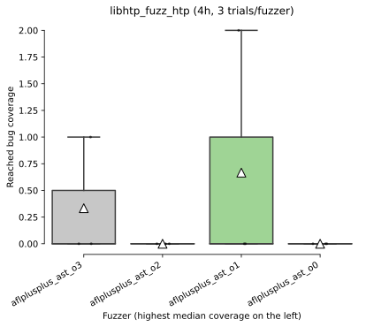Reached code coverage distribution
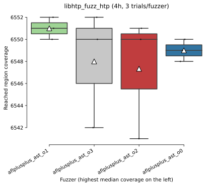Mean code coverage growth over time
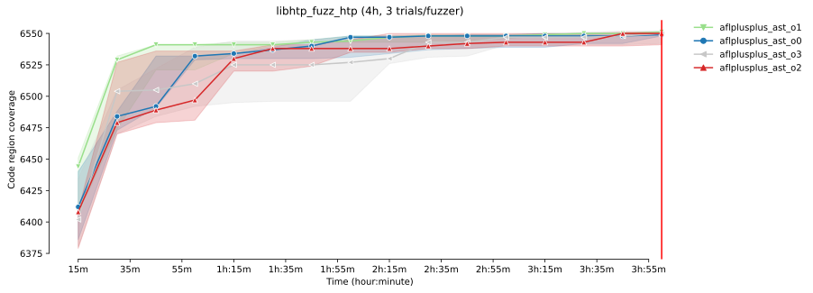Mean code coverage growth over time
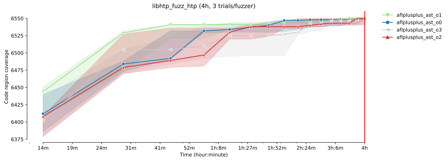Mean bug coverage growth over time
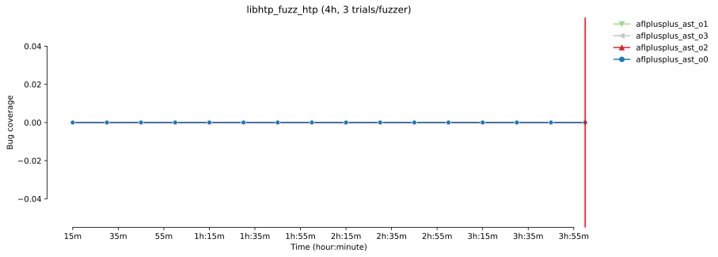Mean bug coverage growth over time
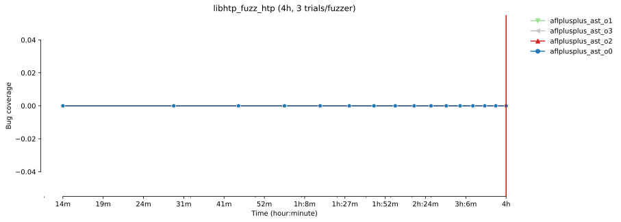
* The error bands show the 95% confidence interval
around the mean code coverage.
-
Sample statistics and statistical significance (bugs covered)
Bug coverage sample statistics
count mean std min 25% median 75% max fuzzer time aflplusplus_ast_o0 14400 3.0 0.000000 0.000000 0.0 0.0 0.0 0.0 0.0 aflplusplus_ast_o1 14400 3.0 0.666667 1.154701 0.0 0.0 0.0 1.0 2.0 aflplusplus_ast_o2 14400 3.0 0.000000 0.000000 0.0 0.0 0.0 0.0 0.0 aflplusplus_ast_o3 14400 3.0 0.333333 0.577350 0.0 0.0 0.0 0.5 1.0
Vargha-Delaney A12 measure 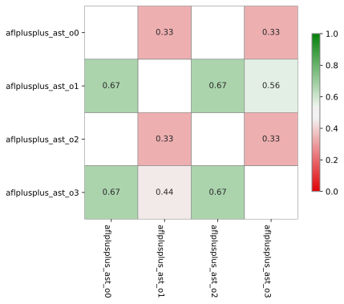 The table summarizes the A12 values from the pairwise Vargha-Delaney A measure of effect size. Green cells indicate the probability the fuzzer in the row will outperform the fuzzer in the column.
Mann-Whitney U test 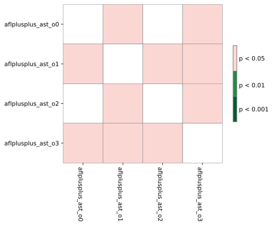 The table summarizes the p values of pairwise Mann-Whitney U tests. Green cells indicate that the reached coverage distribution of a given fuzzer pair is significantly different.
-
Sample statistics and statistical significance (code coverage)
Code coverage sample statistics
count mean std min 25% median 75% max fuzzer time aflplusplus_ast_o1 14400 3.0 6551.000000 1.000000 6550.0 6550.5 6551.0 6551.5 6552.0 aflplusplus_ast_o2 14400 3.0 6547.333333 5.507571 6541.0 6545.5 6550.0 6550.5 6551.0 aflplusplus_ast_o3 14400 3.0 6548.000000 5.291503 6542.0 6546.0 6550.0 6551.0 6552.0 aflplusplus_ast_o0 14400 3.0 6549.000000 1.000000 6548.0 6548.5 6549.0 6549.5 6550.0
Vargha-Delaney A12 measure 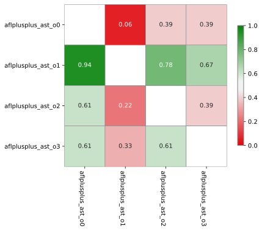 The table summarizes the A12 values from the pairwise Vargha-Delaney A measure of effect size. Green cells indicate the probability the fuzzer in the row will outperform the fuzzer in the column.
Mann-Whitney U test 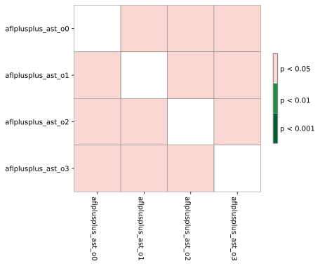 The table summarizes the p values of pairwise Mann-Whitney U tests. Green cells indicate that the reached coverage distribution of a given fuzzer pair is significantly different.
-
Unique code coverage plots
Ranking by unique code regions covered
 Each bar shows the total number of code regions found by a given fuzzer.
The colored area shows the number of unique code regions
(i.e., regions that were not covered by any other fuzzers).
Each bar shows the total number of code regions found by a given fuzzer.
The colored area shows the number of unique code regions
(i.e., regions that were not covered by any other fuzzers).
Pairwise unique code coverage 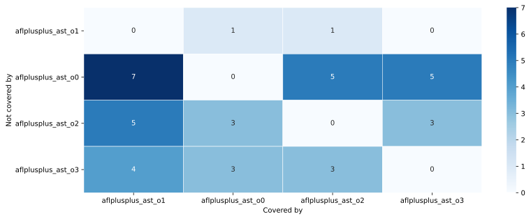 Each cell represents the number of code regions covered by the fuzzer of the column but not by the fuzzer of the row
-
Code coverage reports for each fuzzer on this benchmark
experiment data
You can download the raw data for this report here.Check out the documentation on how to create customized reports using this data. Also see some example Colab notebooks for doing custom analysis on the data here.
The experiment was conducted using this FuzzBench commit: 23b47148183fae6cbfcdf65c698dffe01fe3d532
To reproduce this experiment run the following commands in your FuzzBench repo:
# Check out the right commit.
git checkout 23b47148183fae6cbfcdf65c698dffe01fe3d532
# Download the internal config file.
curl https://storage.googleapis.com//home/b/tmp/ast-fuzz/experiment-data/exp-2022-04-27-22-43-58/input/config/experiment.yaml > /tmp/experiment-config.yaml
make install-dependencies
# Launch the experiment using paramters from the internal config file.
PYTHONPATH=. python experiment/reproduce_experiment.py -c /tmp/experiment-config.yaml -e <new_experiment_name>
Experiment Description:
(None,)